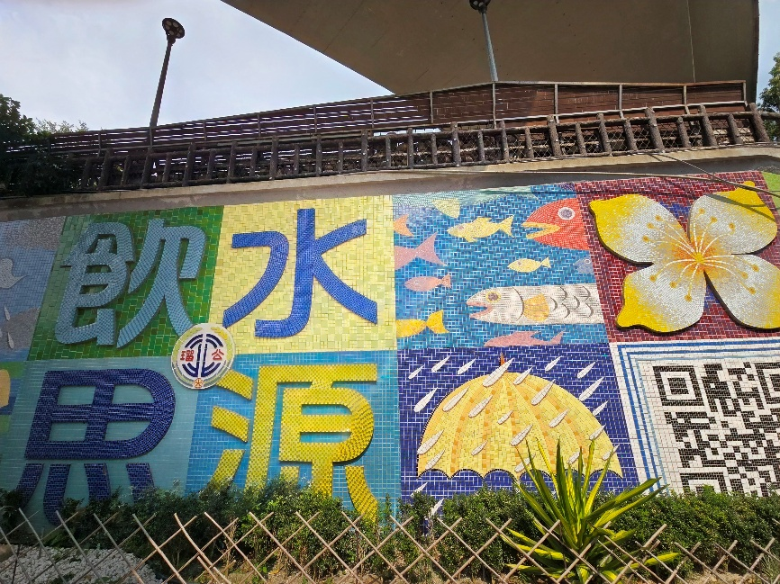
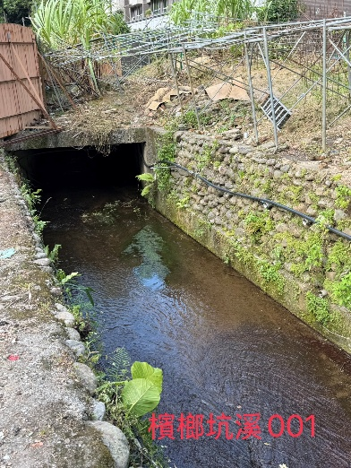
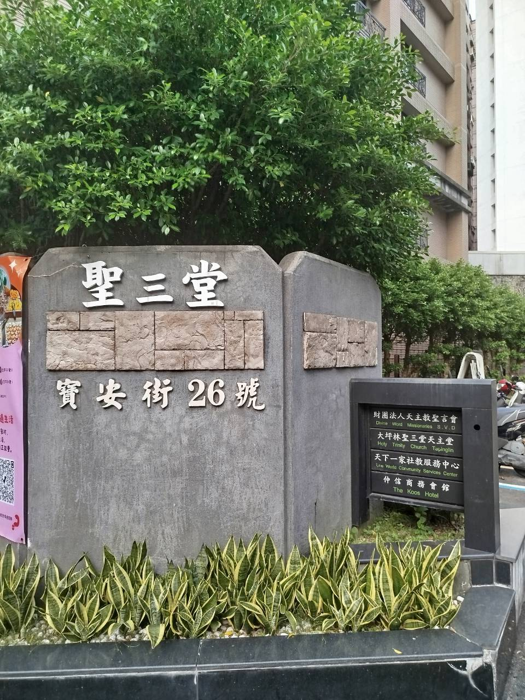

依關鍵字、單元或日期尋找想讀的故事
全部故事
點選下方單元按鈕、輸入關鍵字或切換日期順序，即可快速找到文章。
找不到符合條件的故事，請清除關鍵字或改選「全部」。
-
靈性製圖師的25年軌跡
收錄《2026-10-31_靈性製圖師的25年軌跡》含字幕紀實影片。
-
淑敏的盤點和故事書寫
收錄德華女子公寓與《靈性製圖師的25年軌跡》整理連結。
-

大坪林圳東西幹線
引水石硿的艱辛工程：先民克服嚴峻地形與右岸岩壁阻檔，動員大量人力在岩壁中開鑿百餘公尺的「引水石硿」（今開天宮下方）。
-

瑠公圳力行聚落踏查紀錄
2026年10月1日，跟著高淑華老師及崇光社大夥伴，進行「崇光社大—社區盤點之瑠公圳漫步」。從瑠公圳引水原址、水門、抽水馬達室、萬善同歸、蔡金木宅，一路走到力行路、力行營區，再到瑠公圳親水公園與三育神學院。
-

瑠公圳漫步
1151001瑠公圳漫步｜一條圳，一個家，一段人生的生命之河
-

瑠公圳走讀
特別感謝高淑華老師的帶隊、指導與校正，讓這次走讀紀錄能更完整，也更貼近當天的實際內容。
-

新店小獅頭山走讀
2026年9月24日，我們從新店捷運站出發，走進小獅頭山。一路上，從水圳、寺院、老聚落，到昆塞特小屋與煤礦遺跡，看見新店不同時代留下的生活痕跡。這不只是一趟爬山行程，更像是沿著街道讀一段地方歷史。
-

獅山腰的大佛
記得十數年前，只要從新店碧潭一帶向東方山林望去，總能看見矗立於小獅山山壁之上的阿彌陀佛大佛像。那尊大佛曾是獅山崖壁醒目的地標，靜靜看著西方，守望著新店。
-
廣明禪寺
廣欽老和尚落腳新店的第一個修行洞窟；依山勢修建了廣明寺；其後，又在不遠處尋著第二個修行石窟，並循山壁雕鑿寶相莊嚴的大佛；遙想當年大佛所在，視野遼闊，佛光普照山川大地~如今，大佛傍著廣照寺，慈暉普濟眾生~
-

檳榔坑溪
2026.09.24｜從大坪林圳到檳榔坑溪，尋找河流與城市的記憶
-

廣欽老和尚修行路
首先要感謝高淑華老師帶領參訪廣明寺和廣濟禪寺。好奇心起，想借重Google Map的協助，拼圖廣欽老和尚修行的弘法足跡。
-

在歲月裂縫中種植光明：從聖三堂到德華女子公寓
走進新店大坪林捷運站旁繁華的街角，熙來攘往的人潮與高樓大廈林立，讓人難以想像半個世紀前，這裡曾是機聲隆隆、工廠密布的工業重鎮。時間倒回 1960 年代，在新店大坪林與寶斗厝區域（現今寶斗厝路一帶），美商臺灣通用電子公司（通用器材公司）等大廠拔地而起，吸引數以千計的全台城鄉少女北上打拼。當時這些年輕女工因急劇工業化面臨嚴重的居住危機，許多人只能擠在狹窄擁擠、衛生條件匱乏的茅房或板榻上，生活艱苦無依。